Уравнения с несколькими модулями в одной части
Чем больше модулей, тем больше приходиться их раскрывать и тем больше получается различных уравнений. Когда модулей один или два — это не сложно. Сложность возникает когда модулей больше двух. Человек может забыть рассмотреть какой-то из случаев, и получится что уравнение решено не полностью.
Давайте решим следующее уравнение:
|x − 5| − |x| = 1
У данного уравнения два модуля в левой части. Оно решается путем раскрытия модулей. Не будем комментировать решение, а сразу приведём его:

Такой вид уравнения удобнее решать методом интервалов (или более точно — методом промежутков). Суть этого метода в том, чтобы разбить координатную прямую на несколько промежутков, а затем решить уравнение на каждом из этих промежутков. Модули исходного уравнения на каждом промежутке будут раскрываться по разному.
Решим уравнение |x − 5| − |x| = 1 методом интервалов.
Для начала нарисуем координатную прямую и обозначим её как x

Если координатная прямая содержит все числа, которые существуют в природе, то логично что она содержит и корни нашего уравнения.
Теперь надо разбить координатную прямую на промежутки. Для этого сначала нужно найти на ней те точки, на которых модули нашего уравнения будут менять свой порядок раскрытия. То есть, найти точки перехода для модулей |x − 5| и |x|.
Чтобы найти точки перехода, нужно выяснить при каких значениях x подмодульные выражения равны нулю. Узнать это можно приравняв к нулю подмодульные выражения обоих модулей, и решить обычные линейные уравнения:
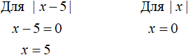
Для модуля |x − 5| точкой перехода будет 5. Для модуля |x| точкой перехода будет 0.
Теперь отметим точки перехода на координатной прямой. Мéньшие числа нужно отмечать левее, большие числа правее:
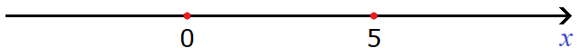
Проведем дуги от точек перехода:
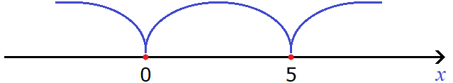
С помощью неравенств подпишем каждый промежуток. Получится три промежутка: от минус бесконечности до нуля, от нуля до пяти, и от пяти до плюс бесконечности. То есть: x < 0, 0 ≤ x < 5 и x ≥ 5
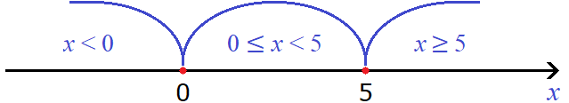
Обратите внимание, что в первом промежутке x < 0 значение 0 не включено в данный промежуток. Но зато это значение включено во второй промежуток 0 ≤ x < 5.
Во втором же промежутке 0 ≤ x < 5 значение 5 не включено в данный промежуток, но зато оно включено в третий промежуток x ≥ 5.
Проще говоря, каждый промежуток включает в себя левый конец, и не включает правый. Сделано это специально, чтобы не допустить потерь значений переменной x. Описать с помощью неравенств нужно все значения на координатной прямой, не допуская их потерь.
Включение левого конца в рассматриваемый промежуток и исключение его из правого это лишь общепринятое правило. На самом деле концы рассматриваемого промежутка можно включать в любой из соседствующих промежутков. Например, значение 0 можно было включить в первый промежуток. Тогда он принял бы вид x ≤ 0, а второй промежуток принял бы вид 0 < x < 5, потому что ноль уже был включен в первый промежуток.
Но лучше всего исходить из ситуации, потому что в каких-то случаях левый конец промежутка целесообразнее исключить из рассматриваемого промежутка и включить его в правый конец соседнего промежутка. Об этом мы поговорим позже.
Теперь выясним как будут вести себя модули |x − 5| и |x| на каждом из этих промежутков. От этого будет зависеть то, как они будут раскрываться.
Начнем с первого промежутка x < 0.
Если x < 0, то при любом значении x на данном промежутке подмодульное выражение x − 5 станет отрицательным, а значит модуль |x − 5| на промежутке x < 0 будет раскрываться со знаком минус. Второй модуль |x| на промежутке x < 0 тоже будет раскрываться со знаком минус.
В результате после раскрытия модулей на промежутке x < 0 уравнение с модулем |x − 5| − |x| = 1 примет вид −(x − 5) + x = 1
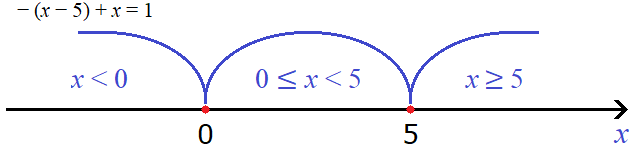
Второй модуль |x| на промежутке x < 0 раскрылся с минусом. В самом же уравнении |x − 5 |− |x| = 1 после выражения |x − 5| тоже располагался минус. В математике два минуса, идущие подряд, дают плюс. Поэтому и получилось выражение −(x − 5) + x = 1.
Решим уравнение −(x − 5) + x = 1, которое получилось после раскрытия модулей на промежутке x < 0
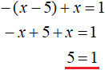
Это уравнение решений не имеет. Значит на промежутке x < 0 исходное уравнение не имеет корней. Проще говоря, корень уравнения не является числом меньшим нуля.
Следующий промежуток, на котором нужно решить уравнение это промежуток 0 ≤ x < 5.
Если x больше или равно нулю, но меньше пяти, то подмодульное выражение x − 5, станет отрицательным, а значит модуль |x − 5| на промежутке 0 ≤ x < 5 будет раскрываться со знаком минус. Второй модуль |x| на промежутке 0 ≤ x < 5 будет раскрываться с плюсом.
В результате после раскрытия модулей на промежутке 0 ≤ x < 5 уравнение с модулем |x − 5| − |x| = 1 примет вид −(x − 5) − x = 1
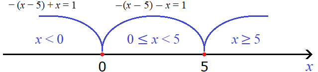
Решим это уравнение:
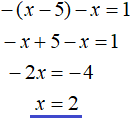
Получили корень 2. Чтобы проверить действительно ли это число является корнем исходного уравнения, нужно посмотреть принадлежит ли это число рассматриваемому промежутку 0 ≤ x < 5. Принадлежит? Да. Значит число 2 является корнем уравнения |x − 5| − |x| = 1. Проверка также показывает это:
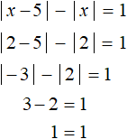
Следующий промежуток, который нужно рассмотреть это промежуток x ≥ 5.
Если x больше или равно пяти, то модуль |x − 5| на промежутке x ≥ 5 будет раскрываться со знаком плюс. Второй модуль |x| на промежутке x ≥ 5 тоже будет раскрываться с плюсом.
В результате после раскрытия модулей на промежутке x ≥ 5 уравнение с модулем |x − 5| − |x| = 1 примет вид x − 5 − x = 1.
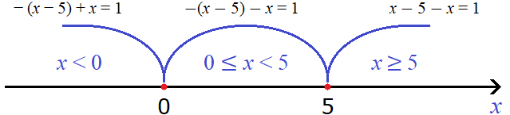
Решим это уравнение:
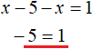
Это уравнение не имеет решений. Значит на промежутке x ≥ 5 исходное уравнение корней не имеет. Проще говоря, корень уравнения не является числом, бóльшим либо равным пяти.
В итоге корнем уравнения является число 2, которое мы нашли решив исходное уравнение на промежутке 0 ≤ x < 5.
Ответ: 2.
Пример 2. Решить уравнение |x − 3| + |x + 2| = 7
Решение
Шаг 1. Находим точки перехода для модулей |x − 3| и |x + 2|
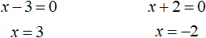
Шаг 2. Отметим на координатной прямой найденные точки перехода и выделим получившиеся промежутки:
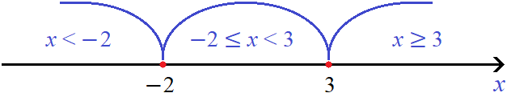
Шаг 3. Решим исходное уравнение на каждом промежутке. Для этого посмóтрим как будут раскрываться модули |x − 3| и |x + 2| на этих промежутках.
На промежутке x < −2 модуль |x − 3| будет раскрываться с минусом. Можно проверить это, подставив в данный модуль любое число из промежутка x < −2. Например, числа −4 или −9
|x − 3| = |−4 − 3| = |−7| = −(−7) = 7
|x − 3| = |−9 − 3| =|−12| = −(−12) = 12
Следующий модуль |x + 2| на промежутке x < −2 тоже будет раскрываться с минусом. Убедимся в этом подставив любые два числа из промежутка x < −2 в подмодульное выражение. Например, числа −6 и −8
|x + 2| = |−6 + 2| = |−4| = −(−4) = 4
|x + 2| = |−8 + 2| = |−6| = −(−6) = 6
Значит после раскрытия модулей на промежутке x < −2 исходное уравнение |x − 3| + |x + 2| = 7 принимает следующий вид:
−x + 3 − x − 2 = 7
Решим его:
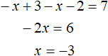
Обязательно нужно проверить входит ли найденный корень −3 в рассматриваемый промежуток x < −2. Для этого нужно подставить в неравенство x < −2 найденный корень −3 и проверить верное ли оно. В данном случае неравенство −3 < −2 верно, значит корень −3 входит в промежуток x < −2 и соответственно является корнем исходного уравнения.
На следующем промежутке −2 ≤ x < 3 модуль |x − 3| будет раскрываться с минусом, а модуль|x + 2| будет раскрываться с плюсом.
Значит после раскрытия модулей на промежутке −2 ≤ x < 3 исходное уравнение |x − 3| + |x + 2| = 7 принимает следующий вид:
−x + 3 + x + 2 = 7
Решим это уравнение:
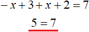
Это уравнение не имеет решений, значит на промежутке −2 ≤ x < 3 исходное уравнение тоже не имеет решений (корней).
Наконец рассмотрим промежуток x ≥ 3
На промежутке x ≥ 3 модуль |x − 3| будет раскрываться с плюсом. Модуль|x + 2| так же будет раскрываться с плюсом. Значит на промежутке x ≥ 3 исходное уравнение |x − 3| + |x + 2| = 7 принимает следующий вид:
x − 3 + x + 2 = 7
Решим это уравнение:
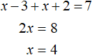
Этот корень входит в рассматриваемый промежуток x ≥ 3, значит является корнем исходного уравнения. Проверка также показывает это:
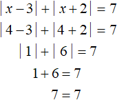
Ответ: −3 и 4.
Пример 3. Решить уравнение |2x − 3| + |2x + 7| = 16
Решение
Найдём точки перехода для модулей |2x − 3| и |2x + 7|
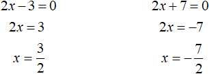
Отметим точки перехода на координатной прямой. Меньшие числа нужно отмечать левее, большие правее:
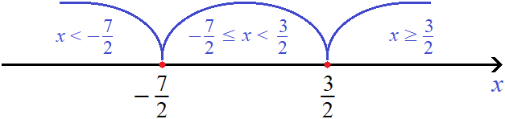
Решим исходное уравнение |2x − 3| + |2x + 7| = 16 на промежутке
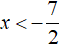
. Оба модуля на этом промежутке будут раскрываться с минусом: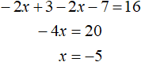
Корень −5 принадлежит промежутку , значит является корнем исходного уравнения.
Теперь решим исходное уравнение на промежутке
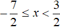
. Модуль |2x − 3| на этом промежутке раскрывается с минусом, а модуль |2x + 7| — с плюсом: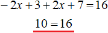
Видим, что на промежутке исходное уравнение не имеет решений (корней).
Теперь решим исходное уравнение на промежутке
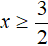
. Оба модуля на данном промежутке раскрываются с плюсом: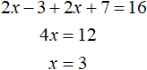
Корень 3 принадлежит промежутку , значит является корнем исходного уравнения.
Ответ: −5 и 3.
Пример 4. Решить уравнение |x − 2| + 3x = |x − 5| − 18
Решение
Найдём точки перехода для модулей |x − 2| и |x − 5|
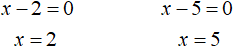
Отметим точки перехода на координатной прямой:
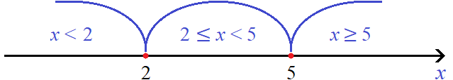
Решим исходное уравнение на промежутке x < 2. Модули |x − 2| и |x − 5| на этом промежутке раскрываются с минусом:
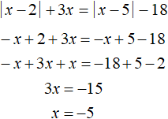
Число −5 принадлежит промежутку x < 2, значит является корнем исходного уравнения.
Решим исходное уравнение на промежутке 2 ≤ x < 5. Модуль |x − 2| на этом промежутке раскрывается с плюсом, а модуль |x − 5| — с минусом:
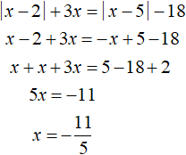
Число
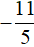
не принадлежит промежутку 2 ≤ x < 5, значит не является корнем исходного уравнения.Решим исходное уравнение на промежутке x ≥ 5. Модули |x − 2| и |x − 5| на этом промежутке будут раскрываться с плюсом:
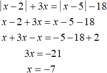
Число −7 не принадлежит промежутку x ≥ 5, значит не является корнем исходного уравнения.
Ответ: −5
Пример 5. Решить уравнение |x| + |x − 7| + 2|x − 4| = 2
Решение
Найдём точки перехода для модулей |x|, |x − 7| и |x − 4|
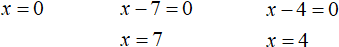
Отметим точки перехода на координатной прямой:
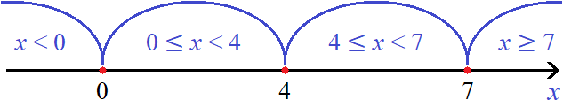
Решим исходное уравнение на промежутке x < 0. Все три модуля: |x|, |x − 7| и |x − 4| на этом промежутке раскрываются с минусом:
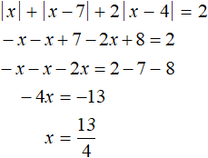
Число
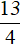
не принадлежит промежутку x < 0, значит не является корнем исходного уравнения.Решим теперь исходное уравнение на промежутке 0 ≤ x < 4. Модуль |x| на этом промежутке раскрывается с плюсом, а модули |x − 7| и |x − 4| — с минусом:
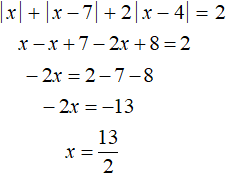
Число
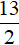
не принадлежит промежутку 0 ≤ x < 4, значит не является корнем исходного уравнения.Решим теперь исходное уравнение на промежутке 4 ≤ x < 7. Модуль |x| на этом промежутке раскрывается с плюсом; модуль |x − 7| — с минусом; модуль |x − 4| — с плюсом:
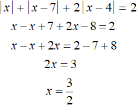
Число
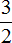
не принадлежит промежутку 4 ≤ x < 7, значит не является корнем исходного уравнения.Решим исходное уравнение на промежутке x ≥ 7. Все три модуля: |x|, |x − 7| и |x − 4| на этом промежутке раскрываются с плюсом:
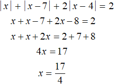
Число
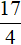
не принадлежит промежутку x ≥ 7, значит не является корнем исходного уравнения.Решив исходное уравнение на каждом промежутке, мы не нашли корней, удовлетворяющих этому уравнению. Значит данное уравнение не имеет корней.
В ответе можно написать словами, что корней нет (или решений нет), либо указать символ пустого множества. Этот символ будет указывать, что множество корней уравнения |x| + |x − 7| + 2|x − 4| = 2 пусто.
Ответ: ø.
Пример 6. Решить уравнение
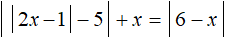
Решение
Найдём точки перехода для модулей
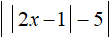
и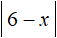
Если методом интервалов нужно решить уравнение с модулем, который в свою очередь содержит внутри себя другой модуль, то точки перехода надо искать для случаев: когда внутренний модуль раскрывается с плюсом и когда он раскрывается с минусом. Точки перехода будут меняться в зависимости от этих случаев. Давайте посмотрим как это происходит.
Если у модуля внутренний модуль раскроется с плюсом, то есть если 2x − 1 ≥ 0 (что равносильно
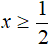
), то исходное уравнение примет вид |2x − 1 − 5| + x = |6 − x|. Здесь и далее надо учесть, что внутренний модуль будет раскрываться с плюсом при тех значениях x, которые будут больше либо равны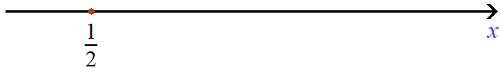
Теперь найдем точки перехода. Поскольку исходное уравнение приняло вид |2x − 1 − 5| + x = |6 − x|, то точки перехода надо найти для модулей |2x − 1 − 5| и |6 − x|.
Для модуля |2x − 1 − 5| точкой перехода будет число 3, а для модуля |6 − x| — число 6. Отметим эти числа на той же координатной прямой где мы отметили точку 
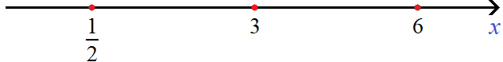
Сейчас нас интересуют только те значения x, которые удовлетворяют условию
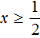
, потому что только при этом условии внутренний модуль исходного уравнения раскрывается с плюсом. Поэтому рассматривать промежуток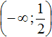
мы не будем. Рассмотреть нужно те промежутки где x удовлетворяет условию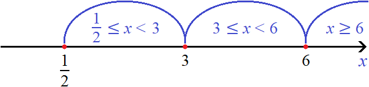
Первый промежуток на котором мы будем решать уравнение это . На нем модуль |2x − 1 − 5| раскрывается с минусом, а модуль |6 − x| с плюсом:
Получили тождество — равенство верное при любом значении x. В данном случае решением исходного уравнения является любое число из промежутка . Любое число из этого промежутка также удовлетворяют условию
Теперь решим исходное уравнение на промежутке 3 ≤ x < 6. Оба модуля на этом промежутке раскрываются с плюсом. Тогда:
Корень 3 принадлежит рассматриваемому промежутку. Также этот корень удовлетворяет условию , согласно которому внутренний модуль исходного уравнения раскрывается с плюсом.
Теперь решим исходное уравнение на промежутке x ≥ 6. На этом промежутке модуль |2x − 1 − 5| раскрывается с плюсом, а модуль |6 − x| с минусом. Тогда:
Корень 0 не удовлетворяет условию x ≥ 6, значит на данном промежутке исходное уравнение корней не имеет.
Итак, если внутренний модуль уравнения раскрывается с плюсом, то решениями уравнения являются: промежуток , а также число 3. Запишем эти решения одним промежутком:
Теперь решим исходное уравнение для случая когда внутренний модуль раскрывается с минусом. То есть когда 2x − 1 < 0 (что равносильно неравенству ). В этом случае исходное уравнение примет вид:
|−2x + 1 − 5| + x = |6 − x|
Отметим точку  на координатной прямой.
на координатной прямой.
Нас будут интересовать те значения x которые располагаются слева от  . Это те значения при которых внутренний модуль исходного уравнения раскрывается с минусом.
. Это те значения при которых внутренний модуль исходного уравнения раскрывается с минусом.
Найдем точки перехода для модулей |−2x + 1 − 5| и |6 − x|. Для первого модуля это число −2, для второго модуля — число 6
Рассматривать будем только те промежутки, которые располагаются слева от  . Только при них внутренний модуль исходного уравнения раскрывается с минусом
. Только при них внутренний модуль исходного уравнения раскрывается с минусом
Решим уравнение на промежутке x < −2. На этом промежутке оба модуля раскрываются с плюсом. Тогда:
Это уравнение решений не имеет. Значит на промежутке x < −2 исходное уравнение не имеет корней.
Решим теперь уравнение на промежутке . Замечаем, что при подстановке левого конца этого промежутка (числа −2) в модуль |−2x + 1 − 5| данный модуль раскрывается с плюсом, а при остальных значениях промежутка модуль |−2x + 1 − 5| раскрывается с минусом.
Поэтому число −2 разумнее включить в промежуток x < −2, который мы уже рассмотрели. На промежутке x < −2 модуль раскрывался с плюсом, и при включении числа −2 в данный промежуток, он также будет раскрываться с плюсом.
На промежутке модуль |−2x + 1 − 5| раскрывается с минусом, а модуль |6 − x| с плюсом. Тогда:
Получится корень который не удовлетворяет условию . Несмотря на это число  является корнем исходного уравнения, потому что мы получили его когда решали уравнение для случая 2x − 1 ≥ 0.
является корнем исходного уравнения, потому что мы получили его когда решали уравнение для случая 2x − 1 ≥ 0.
Задания для самостоятельного решения
Примечание: Решения, не удовлетворяющие исходному уравнению, подчёркнуты красным.